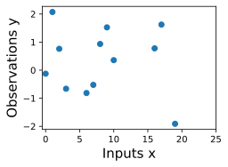
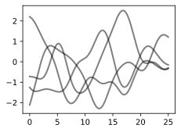
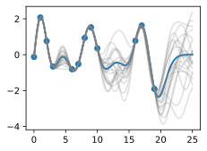
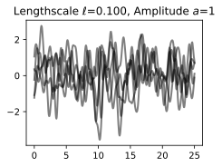
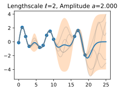
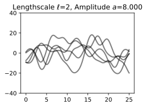
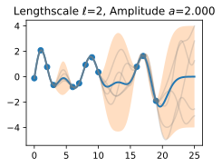
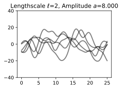
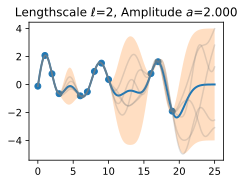
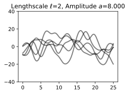

Data Science for Electron Microscopy Lecture 6: Gaussian Processes 1
Philipp Pelz
FAU Erlangen-Nürnberg
Introduction to Gaussian Processes 1
Gaussian processes provide a mechanism for directly reasoning about the high-level properties of functions that could fit our data.
may have a sense of whether these functions are quickly varying, periodic, involve conditional independencies, or translation invariance.
Gaussian processes: easily incorporate these properties into our model, by directly specifying a Gaussian distribution over the function values that could fit our data.
Introduction to Gaussian Processes 2
Suppose we observe the following dataset, of regression targets (outputs), \(y\), indexed by inputs, \(x\). 
example: targets could be changes in carbon dioxide concentrations, inputs could be the times at which these targets have been recorded
What are some features of the data? How quickly does it seem to varying? Do we have data points collected at regular intervals, or are there missing inputs? How would you imagine filling in the missing regions, or forecasting up until \(x=25\)?
Introduction to Gaussian Processes 3
start by specifying a prior distribution over what types of functions we might believe to be reasonable.
show several sample functions from a Gaussian process. Does this prior look reasonable? we are not looking for functions that fit our dataset, but instead for specifying reasonable high-level properties of the solutions, such as how quickly they vary with inputs. Note that we will see code for reproducing all of the plots in this notebook, in the next notebooks on priors and inference.

Sample prior functions that we may want to represent with our model.
Introduction to Gaussian Processes 3.5
Bayes theorem
Introduction to Gaussian Processes 4
Once we condition on data, we can use this prior to infer a posterior distribution over functions that could fit the data. Here we show sample posterior functions.
Sample posterior functions, once we have observed the data.
each of these functions are entirely consistent with our data, perfectly running through each observation.
In order to use these posterior samples to make predictions, we can average the values of every possible sample function from the posterior, to create the curve below, in thick blue.
Note that we do not actually have to take an infinite number of samples to compute this expectation; as we will see later, we can compute the expectation in closed form.
Introduction to Gaussian Processes 5

Posterior samples, alongside posterior mean, which can be used for point predictions, in blue.
may also want a representation of uncertainty, so we know how confident we should be in our predictions.
Intuitively: more variability in the sample posterior functions –> more uncertainty
epistemic uncertainty, which is the reducible uncertainty associated with lack of information.
acquire more data –> this type of uncertainty disappears, as there will be increasingly fewer solutions consistent with what we observe.
Like with the posterior mean, we can compute the posterior variance (the variability of these functions in the posterior) in closed form.
Introduction to Gaussian Processes 6
Posterior samples, including 95% credible set.
shade: two times the posterior standard deviation on either side of the mean, creating a credible interval that has a 95% probability of containing the true value of the function for any input \(x\).
plot looks somewhat cleaner if we remove the posterior samples, simply visualizing the data, posterior mean, and 95% credible set.
Notice how the uncertainty grows away from the data, a property of epistemic uncertainty.
Introduction to Gaussian Processes 7
Point predictions, and credible set.
properties of the Gaussian process that we used to fit the data are strongly controlled by what’s called a covariance function, also known as a kernel.
covariance function we used is called the RBF (Radial Basis Function) kernel, which has the form \[ k_{\text{RBF}}(x,x') = \mathrm{Cov}(f(x),f(x')) = a^2 \exp\left(-\frac{1}{2\ell^2}||x-x'||^2\right) \]
The hyperparameters of this kernel are interpretable. The amplitude parameter \(a\) controls the vertical scale over which the function is varying, and the length-scale parameter \(\ell\) controls the rate of variation (the wiggliness) of the function.
Larger \(a\) means larger function values, and larger \(\ell\) means more slowly varying functions. Let’s see what happens to our sample prior and posterior functions as we vary \(a\) and \(\ell\).
The length-scale has a particularly pronounced effect on the predictions and uncertainty of a GP. At \(||x-x'|| = \ell\) , the covariance between a pair of function values is \(a^2\exp(-0.5)\).
At larger distances than \(\ell\) , the values of the function values becomes nearly uncorrelated. This means that if we want to make a prediction at a point \(x_*\), then function values with inputs \(x\) such that \(||x-x'||>\ell\) will not have a strong effect on our predictions.
Introduction to Gaussian Processes 9
how changing the lengthscale affects sample prior and posterior functions, and credible sets. The above fits use a length-scale of \(2\). Let’s now consider \(\ell = 0.1, 0.5, 2, 5, 10\) .

A length-scale of \(0.1\) is very small relative to the range of the input domain we are considering, \(25\). For example, the values of the function at \(x=5\) and \(x=10\) will have essentially no correlation at such a length-scale.
On the other hand, for a length-scale of \(10\), the function values at these inputs will be highly correlated.
Note that the vertical scale changes in the following figures.
Introduction to Gaussian Processes 10
length-scale of \(0.1\) is very small relative to the range of the input domain we are considering, \(25\).
For example, the values of the function at \(x=5\) and \(x=10\) will have essentially no correlation at such a length-scale.
On the other hand, for a length-scale of \(10\), the function values at these inputs will be highly correlated.
Note that the vertical scale changes in the following figures.
as the length-scale increases the ‘wiggliness’ of the functions decrease, and our uncertainty decreases.
If the length-scale is small, the uncertainty will quickly increase as we move away from the data, as the datapoints become less informative about the function values.
Introduction to Gaussian Processes 11
 
now vary the amplitude parameter, holding the length-scale fixed at \(2\).
Note the vertical scale is held fixed for the prior samples, and varies for the posterior samples, so you can clearly see both the increasing scale of the function, and the fits to the data.
amplitude parameter affects the scale of the function, but not the rate of variation. . . .
generalization performance of our procedure will depend on having reasonable values for these hyperparameters. . . .
Values of \(\ell=2\) and \(a=1\) appeared to provide reasonable fits, while some of the other values did not.
Fortunately, there is a robust and automatic way to specify these hyperparameters, using what is called the marginal likelihood, which we will return to in the notebook on inference.
Interactive Visualization
So what is a GP, really?
GP: any collection of function values \(f(x_1),\dots,f(x_n)\), indexed by any collection of inputs \(x_1,\dots,x_n\) has a joint multivariate Gaussian distribution.
mean vector \(\mu\) of this distribution is given by a mean function, which is typically taken to be a constant or zero.
covariance matrix of this distribution is given by the kernel evaluated at all pairs of the inputs \(x\).
Equation (1) specifies a GP prior. We can compute the conditional distribution of \(f(x)\) for any \(x\) given \(f(x_1), \dots, f(x_n)\), the function values we have observed.
This conditional distribution is called the posterior, and it is what we use to make predictions.
where \(k(x,x_{1:n})\) is a \(1 \times n\) vector formed by evaluating \(k(x,x_{i})\) for \(i=1,\dots,n\) and \(k(x_{1:n},x_{1:n})\) is an \(n \times n\) matrix formed by evaluating \(k(x_i,x_j)\) for \(i,j = 1,\dots,n\). \(m\) is what we can use as a point predictor for any \(x\), and \(s^2\) is what we use for uncertainty:
if we want to create an interval with a 95% probability that \(f(x)\) is in the interval, we would use \(m \pm 2s\).
predictive means and uncertainties for all the above figures were created using these equations.
observed data points were given by \(f(x_1), \dots, f(x_n)\) and chose a fine grained set of \(x\) points to make predictions.
Introduction to Gaussian Processes 15
suppose we observe a single datapoint, \(f(x_1)\), and we want to determine the value of \(f(x)\) at some \(x\).
\(f(x)\) described by Gaussian process –> joint distribution over \((f(x), f(x_1))\) is Gaussian:
off-diagonal expression \(k(x,x_1) = k(x_1,x)\) tells us how correlated the function values will be — how strongly determined \(f(x)\) will be from \(f(x_1)\).
have seen already that if we use a large length-scale, relative to the distance between \(x\) and \(x_1\), \(||x-x_1||\), then the function values will be highly correlated.
visualize the process of determining \(f(x)\) from \(f(x_1)\) both in the space of functions, and in the joint distribution over \(f(x_1), f(x)\).
initially consider an \(x\) such that \(k(x,x_1) = 0.9\), and \(k(x,x)=1\), meaning that the value of \(f(x)\) is moderately correlated with the value of \(f(x_1)\).
In the joint distribution, the contours of constant probability will be relatively narrow ellipses.
Introduction to Gaussian Processes 16
Suppose we observe \(f(x_1) = 1.2\). To condition on this value of \(f(x_1)\), we can draw a horizontal line at \(1.2\) on our plot of the density, and see that the value of \(f(x)\) is mostly constrained to \([0.64,1.52]\).
We have also drawn this plot in function space, showing the observed point \(f(x_1)\) in orange, and 1 standard deviation of the Gaussian process predictive distribution for \(f(x)\) in blue, about the mean value of \(1.08\).
Introduction to Gaussian Processes 17
suppose we have a stronger correlation, \(k(x,x_1) = 0.95\).
the ellipses have narrowed further, and the value of \(f(x)\) is even more strongly determined by \(f(x_1)\).
Drawing a horizontal line at \(1.2\), we see the contours for \(f(x)\) support values mostly within \([0.83, 1.45]\).
show the plot in function space, with one standard deviation about the mean predictive value of \(1.14\).
Introduction to Gaussian Processes 18
posterior mean predictor of our Gaussian process is closer to \(1.2\), because there is a stronger correlation.
also uncertainty (the error bars) have somewhat decreased.
Despite strong correlation between function values, uncertainty still quite large, because we have only observed a single data point!
Introduction to Gaussian Processes 19
This procedure can give us a posterior on \(f(x)\) for any \(x\), for any number of points we have observed.
Suppose we observe \(f(x_1), f(x_2)\).
visualize the posterior for \(f(x)\) at a particular \(x=x'\) in function space.
exact distribution for \(f(x)\) is given by the above equations. \(f(x)\) is Gaussian distributed, with mean
easy to include observation noise. If we assume that the data are generated from a latent noise free function \(f(x)\) plus iid Gaussian noise \(\epsilon(x) \sim \mathcal{N}(0,\sigma^2)\) with variance \(\sigma^2\), then our covariance function simply becomes \(k(x_i,x_j) \to k(x_i,x_j) + \delta_{ij}\sigma^2\), where \(\delta_{ij} = 1\) if \(i=j\) and \(0\) otherwise.
Summary 1
typical machine learning: we specify a function with some free parameters (such as a neural network and its weights), and we focus on estimating those parameters, which may not be interpretable.
Gaussian process: reason about distributions over functions directly, which enables us to reason about the high-level properties of the solutions.
properties are controlled by a covariance function (kernel), which often has a few highly interpretable hyperparameters.
hyperparameters include the length-scale, which controls how rapidly (how wiggily) the functions are. Another hyperparameter is the amplitude, which controls the vertical scale over which our functions are varying.
representing many different functions that can fit the data, and combining them all together into a predictive distribution, is a distinctive feature of Bayesian methods.
greater amount of variability between possible solutions far away from the data –> uncertainty intuitively grows as we move from the data.
Summary 2
Gaussian process represents a distribution over functions by specifying a multivariate normal (Gaussian) distribution over all possible function values.
possible to easily manipulate Gaussian distributions to find the distribution of one function value based on the values of any set of other values.
observe a set of points –> condition on these points and infer a distribution over what the value of the function might look like at any other input.
How we model the correlations between these points is determined by the covariance function and is what defines the generalization properties of the Gaussian process.
GPs easy to work with, have many applications, and help us understand and develop other model classes, like neural networks.
Exercises
What is the difference between epistemic uncertainty versus observation uncertainty?
Besides rate of variation and amplitude, what other properties of functions might we want to consider, and what would be real-world examples of functions that have those properties?
The RBF covariance function we considered says that covariances (and correlations) between observations decrease with their distance in the input space (times, spatial locations, etc.). Is this a reasonable assumption? Why or why not?
Is a sum of two Gaussian variables Gaussian? Is a product of two Gaussian variables Gaussian? If (a,b) have a joint Gaussian distribution, is a|b (a given b) Gaussian? Is a Gaussian?
Repeat the exercise where we observe a data point at \(f(x_1) = 1.2\), but now suppose we additionally observe \(f(x_2) = 1.4\). Let \(k(x,x_1) = 0.9\), and \(k(x,x_2) = 0.8\). Will we be more or less certain about the value of \(f(x)\), than when we had only observed \(f(x_1)\)? What is the mean and 95% credible set for our value of \(f(x)\) now?
Do you think increasing our estimate of observation noise would increase or decrease our estimate of the length-scale of the ground truth function?
As we move away from the data, suppose the uncertainty in our predictive distribution increases to a point, then stops increasing. Why might that happen?
Gaussian Process Priors
Understanding GPs is important for reasoning about model construction and generalization, and for achieving state-of-the-art performance in a variety of applications, including active learning, and hyperparameter tuning in deep learning.
GPs are everywhere, and it is in our interests to know what they are and how we can use them.
this section: Gaussian process priors over functions.
import numpy as npfrom scipy.spatial import distance_matriximport d2limport torchd2l.set_figsize()
Definition 1
GP is defined as a collection of random variables, any finite number of which have a joint Gaussian distribution.
If a function \(f(x)\) is a Gaussian process, with mean function\(m(x)\) and covariance function or kernel\(k(x,x')\), \(f(x) \sim \mathcal{GP}(m, k)\),
–> any collection of function values queried at any collection of input points \(x\) (times, spatial locations, image pixels, etc.), has a joint multivariate Gaussian distribution with mean vector \(\mu\) and covariance matrix \(K\): \(f(x_1),\dots,f(x_n) \sim \mathcal{N}(\mu, K)\), where \(\mu_i = E[f(x_i)] = m(x_i)\) and \(K_{ij} = \mathrm{Cov}(f(x_i),f(x_j)) = k(x_i,x_j)\).
with \(w\) drawn from a Gaussian (normal) distribution, and \(\phi\) being any vector of basis functions, for example \(\phi(x) = (1, x, x^2, ..., x^d)^{\top}\), is a Gaussian process.
Moreover, any Gaussian process f(x) can be expressed in the form of equation (1).
A Simple Gaussian Process 1
consider a few concrete examples
Suppose \(f(x) = w_0 + w_1 x\), and \(w_0, w_1 \sim \mathcal{N}(0,1)\), with \(w_0, w_1, x\) all in one dimension.
can equivalently write this function as the inner product \(f(x) = (w_0, w_1)(1, x)^{\top}\). In (1) above, \(w = (w_0, w_1)^{\top}\) and \(\phi(x) = (1,x)^{\top}\).
For any \(x\), \(f(x)\) is a sum of two Gaussian random variables.
Gaussians are closed under addition –> \(f(x)\) is also a Gaussian random variable for any \(x\).
In fact, we can compute for any particular \(x\) that \(f(x)\) is \(\mathcal{N}(0,1+x^2)\).
Similarly, the joint distribution for any collection of function values, \((f(x_1),\dots,f(x_n))\), for any collection of inputs \(x_1,\dots,x_n\), is a multivariate Gaussian distribution. Therefore \(f(x)\) is a Gaussian process.
\(f(x)\) is a random function, or a distribution over functions.
gain some insights into this distribution by repeatedly sampling values for \(w_0, w_1\), and visualizing the corresponding functions \(f(x)\), which are straight lines with slopes and different intercepts, as follows:
If \(w_0\) and \(w_1\) are instead drawn from \(\mathcal{N}(0,\alpha^2)\), how do you imagine varying \(\alpha\) affects the distribution over functions?
From Weight Space to Function Space 1
we saw how a distribution over parameters in a modelinduces a distribution over functions.
often have ideas about the functions we want to model — whether they’re smooth, periodic, quickly varying, etc. — relatively tedious to reason about the parameters, which are largely uninterpretable.
GPs provide an easy mechanism to reason directly about functions.
Gaussian distribution is entirely defined by its first two moments, its mean and covariance matrix, a Gaussian process by extension is defined by its mean function and covariance function.
distribution over functions can now be directly specified and sampled from, without needing to sample from the distribution over parameters.
For example, to draw from \(f(x)\), we can simply form our multivariate Gaussian distribution associated with any collection of \(x\) we want to query, and sample from it directly.
very advantageous
same derivation for the simple straight line model above can be applied to find the mean and covariance function for any model of the form \(f(x) = w^{\top} \phi(x)\), with \(w \sim \mathcal{N}(u,S)\).
In this case, the mean function \(m(x) = u^{\top}\phi(x)\), and the covariance function \(k(x,x') = \phi(x)^{\top}S\phi(x')\). Since \(\phi(x)\) can represent a vector of any non-linear basis functions, we are considering a very general model class, including models with an even an infinite number of parameters.
The Radial Basis Function (RBF) Kernel 1
radial basis function (RBF) kernel is the most popular covariance function for Gaussian processes
kernel has the form \(k_{\text{RBF}}(x,x') = a^2\exp\left(-\frac{1}{2\ell^2}||x-x'||^2\right)\), where \(a\) is an amplitude parameter, and \(\ell\) is a lengthscale hyperparameter.
Let’s derive this kernel starting from weight space. Consider the function
\(f(x)\) is a sum of radial basis functions, with width \(\ell\), centred at the points \(c_i\), as shown in the following figure.
We can recognize \(f(x)\) as having the form \(w^{\top} \phi(x)\), where \(w = (w_1,\dots,w_J)^{\top}\) and \(\phi(x)\) is a vector containing each of the radial basis functions. The covariance function of this Gaussian process is then
what happens as we take the number of parameters (and basis functions) to infinity. Let \(c_J = \log J\), \(c_1 = -\log J\), and \(c_{i+1}-c_{i} = \Delta c = 2\frac{\log J}{J}\), and \(J \to \infty\). The covariance function becomes the Riemann sum:
By setting \(c_0 = -\infty\) and \(c_\infty = \infty\), we spread the infinitely many basis functions across the whole real line, each a distance \(\Delta c \to 0\) apart:
By moving into the function space representation, we have derived how to represent a model with an infinite number of parameters, using a finite amount of computation.
GP with an RBF kernel is a universal approximator, capable of representing any continuous function to arbitrary precision.
The Radial Basis Function (RBF) Kernel 3
We can intuitively see why from the above derivation.
We can collapse each radial basis function to a point mass taking \(\ell \to 0\), and give each point mass any height we wish.
GP with an RBF kernel is a model with an infinite number of parameters and much more flexibility than any finite neural network
all the fuss about overparametrized neural networks is misplaced?
GPs with RBF kernels do not overfit, and in fact provide especially compelling generalization performance on small datasets.
examples in Zhang 2021, such as the ability to fit images with random labels perfectly, but still generalize well on structured problems, (can be perfectly reproduced using Gaussian processes) Wilson 2020.
Neural networks are not as distinct as we make them out to be.
The Radial Basis Function (RBF) Kernel 4
build further intuition about GPs with RBF kernels, and hyperparameters such as length-scale, by sampling directly from the distribution over functions.
simple procedure:
Choose the input \(x\) points we want to query the GP: \(x_1,\dots,x_n\).
Evaluate \(m(x_i)\), \(i = 1,\dots,n\), and \(k(x_i,x_j)\) for \(i,j = 1,\dots,n\) to respectively form the mean vector and covariance matrix \(\mu\) and \(K\), where \((f(x_1),\dots,f(x_n)) \sim \mathcal{N}(\mu, K)\).
Sample from this multivariate Gaussian distribution to obtain the sample function values.
Sample more times to visualize more sample functions queried at those points.
Research on Gaussian processes in machine learning was triggered by research on neural networks.
We can derive the neural network kernel as follows.
Consider a neural network function \(f(x)\) with one hidden layer:
\[f(x) = b + \sum_{i=1}^{J} v_i h(x; u_i).\]
\(b\) is a bias, \(v_i\) are the hidden to output weights, \(h\) is any bounded hidden unit transfer function, \(u_i\) are the input to hidden weights, and \(J\) is the number of hidden units.
Let \(b\) and \(v_i\) be independent with zero mean and variances \(\sigma_b^2\) and \(\sigma_v^2/J\), respectively, and let the \(u_i\) have independent identical distributions.
use the central limit theorem to show that any collection of function values \(f(x_1),\dots,f(x_n)\) has a joint multivariate Gaussian distribution.
The Neural Network Kernel 2
The mean and covariance function of the corresponding Gaussian process are:
In some cases, we can essentially evaluate this covariance function in closed form. Let \(h(x; u) = \text{erf}(u_0 + \sum_{j=1}^{P} u_j x_j)\), where \(\text{erf}(z) = \frac{2}{\sqrt{\pi}} \int_{0}^{z} e^{-t^2} dt\), and \(u \sim \mathcal{N}(0,\Sigma)\). Then \(k(x,x') = \frac{2}{\pi} \text{sin}(\frac{2 \tilde{x}^{\top} \Sigma \tilde{x}'}{\sqrt{(1 + 2 \tilde{x}^{\top} \Sigma \tilde{x})(1 + 2 \tilde{x}'^{\top} \Sigma \tilde{x}')}})\).
RBF kernel is stationary, meaning that it is translation invariant, and therefore can be written as a function of \(\tau = x-x'\).
Intuitively, stationarity means that the high-level properties of the function, such as rate of variation, do not change as we move in input space.
The neural network kernel, however, is non-stationary.
Summary
first step in performing Bayesian inference involves specifying a prior
GPs can be used to specify a whole prior over functions.
Starting from a traditional “weight space” view of modelling, induce a prior over functions by starting with the functional form of a model, and introducing a distribution over its parameters.
alternatively specify a prior distribution directly in function space, with properties controlled by a kernel.
function-space approach has many advantages. We can build models that actually correspond to an infinite number of parameters, but use a finite amount of computation!
models have a great amount of flexibility, but also make strong assumptions about what types of functions are a priori likely, leading to relatively good generalization on small datasets.
assumptions of models in function space controlled by kernels: encode higher level properties of functions, such as smoothness and periodicity
Many kernels are stationary: they are translation invariant.
Functions drawn from GP with a stationary kernel have roughly the same high-level properties regardless of where we look in the input space.
GPs a relatively general model class including polynomials, Fourier series, and so on, as long as we have a Gaussian prior over the parameters.
also include neural networks with an infinite number of parameters, even without Gaussian distributions over the parameters.


  
 